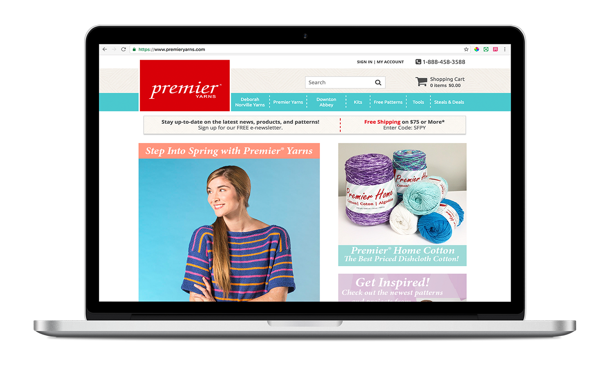

Premier Yarns Case Study
user research, e-commerce design, marketing content strategy

Premier Yarns is a yarn company that sells to big box stores such as Michael’s, Jo-Ann’s and A.C. Moore. I was hired to help redesign their current direct to consumer web store and transition to a Shopify based e-commerce site. I was also responsible for supporting a new focus on content, email, and social media marketing.
Our primary goals were to leverage the power of Shopify’s e-commerce platform and rebrand with a sleeker, more user friendly experience. We also wanted to add structure to support more content marketing efforts.
Process
My first task was to research competitor sites. We were heavily lacking in branded content (no homepage slider or pop-up, no blog, no call out to social media). At the time, the website was managed and maintained by a third party. The branding was not consistent and heavily mirrored and borrowed from the the third party vendor’s website. The yarn categories were difficult to find, and there was no categorizing of our large database of free patterns.
With the help of my manager, we held several focus groups - both in person and virtually, with yarn consumers of all ages and skill levels. We asked what was the most important thing they look for when purchasing yarn online, and discussed the best ways to convince them to purchase a yarn they had never touched before. We showed them the competitor sites and got feedback on what features they found most useful.
Using this feedback, I created a new site map and determined new filtering options and categories for all our products. We partnered with an agency specializing in the Shopify platform to help customize a theme that would meet our marketing and business needs. I was in charge of designing all graphics for the website.
I supported the push for new marketing content by designing graphics for all our promotional emails (5-6 a week), and designing stylized lookbooks that featured our yarns and patterns. I also started an instagram account for the company and created content there as well. I collaborated with our creative team to publish blog posts and was in charge of code edits for blog styling, website code edits, and the installation of additional applications to increase website functionality.
What I learned
Just because you empathize with your users doesn’t mean you know or understand what they need. In my ideal design world, the website would be much simpler. However, in our focus groups, we found that minimalistic designs did not test well. Our users liked as much content and filtering options as possible. What I originally envisioned for the design completely changed after our focus groups and talking with knitters and crocheters in the yarn community. Test early and test often, and never assume you know what your users want until you ask them.